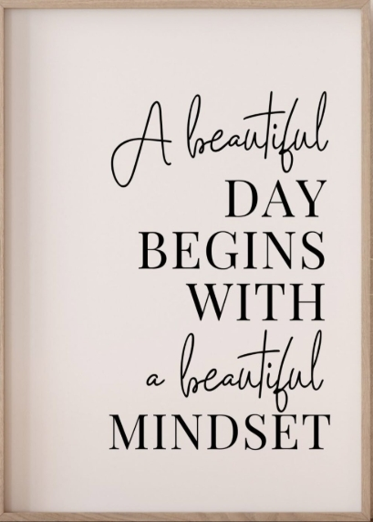
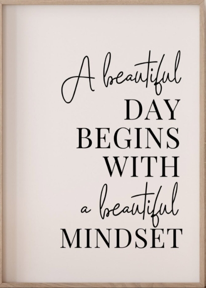
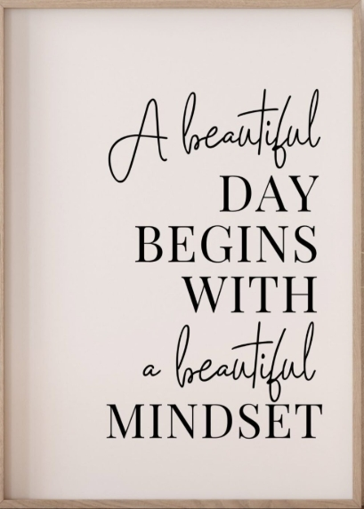
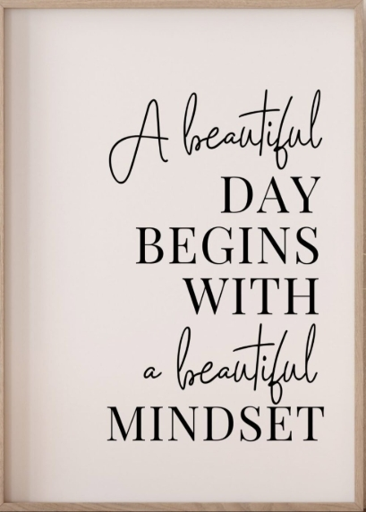
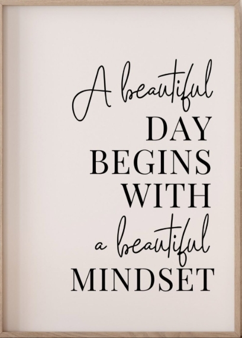

Welcome to the Virtual Interview Simulator

This prototype demonstrates the core functionality of a Virtual Interview Simulator.
Show Interview Questions
What is your greatest strength?
What is your biggest weakness?
Why do you want to work here?
Where do you see yourself in five years?
Why should we hire you?
 


